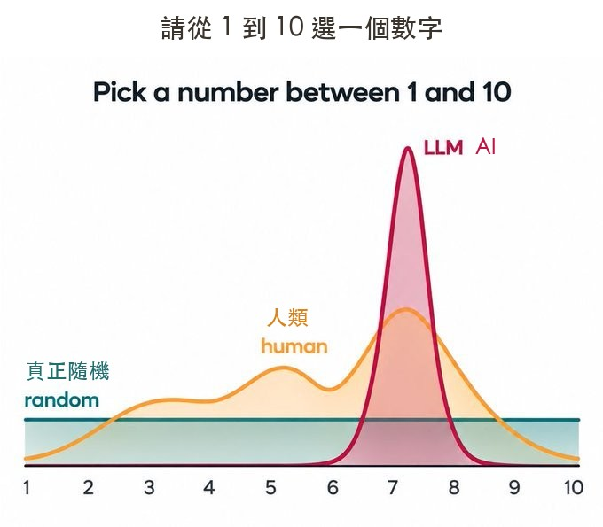
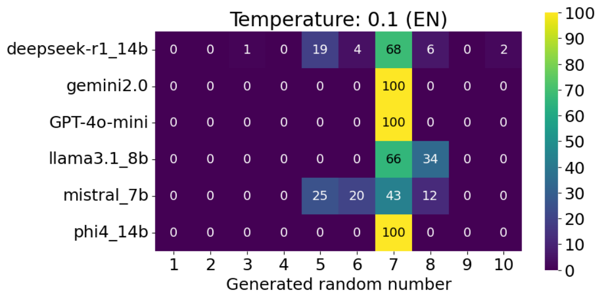
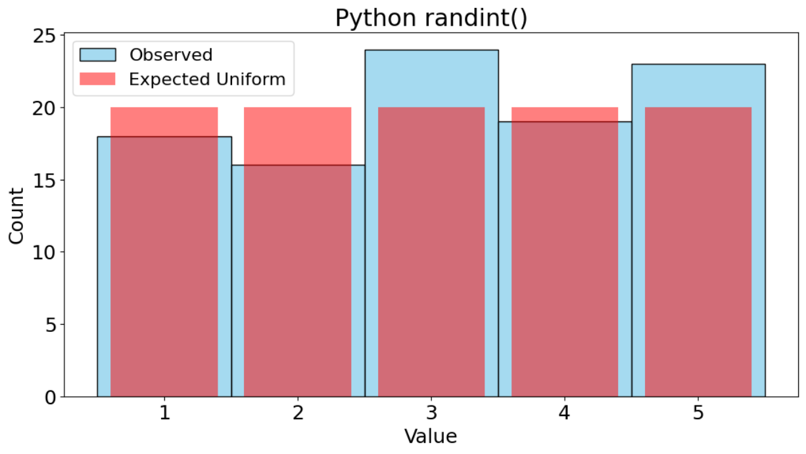
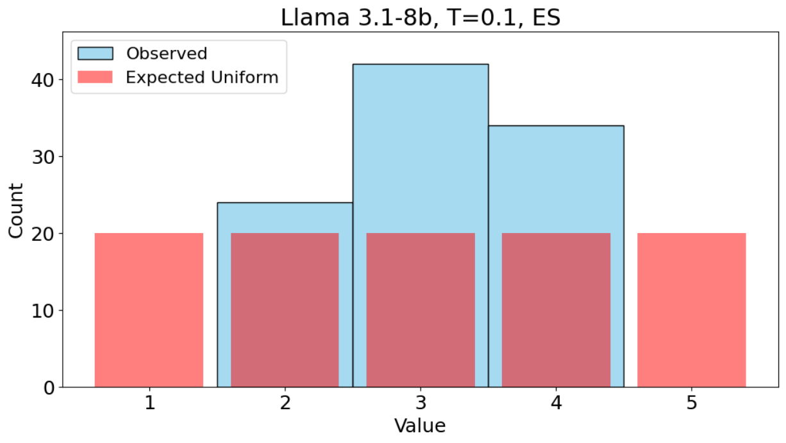

先看一張圖
請你從 1 到 10 選一個數字。真正的隨機、人類、AI，選出來的樣子完全不一樣。

圖片來源：Adam Zachary Wasserman 在 X 發布的圖（2026-10-13），經 filmwalker 在 Threads 轉述介紹。
我叫 AI 選 1 到 10，問了十次
我請 AI 助手用同一句話去問另一個 AI：「從 1 到 10 選一個數字，只回答數字。」每次都開新的對話，一共問十次。
十次的答案，全部都是 7。
如果是真的隨機，十次全部抽到同一個數字，機會非常小。這只是我做的一個小實驗，只用了一種問法和一個工具，所以我又去找了研究，看看是不是只有我遇到。
研究也看到一樣的事
有一篇 2025 年的論文，把同一個問題拿去問六個 AI 模型，每個模型問一百次。下面這張圖，顏色越亮代表那個數字被選得越多。

你看，亮的幾乎都擠在 7 那一欄。如果是真的隨機，每個數字被選到的次數應該差不多。
圖片來源：Javier Coronado-Blázquez,〈Deterministic or probabilistic? The psychology of LLMs as random number generators〉，arXiv:2502.19965，依 CC BY 4.0 授權引用，圖未經修改。這篇文章參考了這篇論文。
為什麼 AI 會一直選 7
AI 是讀了大量人類寫的文字，學會「這句話後面，通常接什麼」。論文作者認為，AI 選數字的偏好，反映的是它從人類文字裡學到的習慣。
所以你叫它「隨機」，它其實是照著學到的習慣，挑一個看起來最像答案的數字。它沒有在擲骰子。
而且每個模型的習慣不一樣，有的偏 7，有的會在 7 和 8 之間跳。你用的模型不同，結果也可能不同。
這個坑會出現在哪裡
- 抽獎：叫 AI 從名單裡抽一個人，某幾個人可能一直比較容易被抽到。
- 分組、點名：你以為很公平，其實 AI 有自己的偏好。
- 抽題目、抽順序：每次抽出來的結果，可能都差不多。
被抽的人不會知道，你自己也很難發現。這就是這個坑麻煩的地方。
論文測的是數字，抽名單我還沒看到同樣規模的研究。但連選數字都有偏好，抽名字這種大家在意公平的事，我不建議冒險。
那要怎麼抽才對
很簡單：別讓 AI 用「想」的幫你挑。最省事的是用現成的抽籤工具；想留在 AI 裡，就請它寫一個抽籤小程式，由程式來抽。
下面兩張圖是同一篇論文裡的比較，抽的是 1 到 5，紅色是「完全平均」該有的高度，藍色是實際抽到的次數。


想試試看，可以把這句話直接貼給 AI：
如果是抽獎金、發獎品這種大家很在意公平的場合，抽完把程式和結果一起留下來，被問到的時候拿得出來。
- 讓 AI 只做需要判斷的事，其他交給程式｜四情境分工法：抽籤這種要公平、要固定規則的事，就是適合交給程式的那一類。
真正要記住的
AI 很好用，但它有自己的習慣。這些習慣藏在模型裡面，平常看不出來，等到出事才發現。
要避開這種坑，有兩個做法：一是先知道哪裡有坑，二是把規則寫清楚，交給程式去跑。
你用 AI 有沒有哪一次覺得怪怪的，卻說不出哪裡怪？可以留言或來問我。很多坑，先知道就能少踩一次。
- arXiv 2502.19965：六個 AI 模型產生隨機數字的研究，本文的圖都來自這篇。